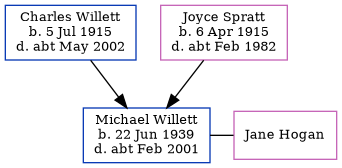

Michael St J Willett 1939 - c2001
[ Home ] | [ Calendar ] | [ Surnames Index ] | [ Errors ] | [ Family History ]The older of 2 children of Charles Willett and Joyce Spratt, Michael Willett, the second cousin on the father's side of Nigel Horne, was born in Canterbury, Kent, England on 22 Jun 19391,2. He married Jane Hogan in Brent, London, England around May 19723. In 1942, he was living at Randolph Square, Cliftonville, Kent, England.
He died c. Feb 2001 in Thanet, Kent, England2.
Parents
- Charles George was born on 5 Jul 1915
- Joyce Catherine was born on 6 Apr 1915
Citations
- England & Wales births 1837-2006 - Findmypast
- England & Wales deaths 1837-2007 - Findmypast
- England & Wales Marriages 1837-2005 - Findmypast
Media
England & Wales deaths 1837-2007 - BMD/D/2001/3/84602558
England & Wales births 1837-2006 - BMD/B/1939/3/AZ/001318/124
England & Wales marriages 1837-2005 - BMD/M/1972/2/PZ/000590/102
Family Tree
Map
Generated by ged2site. Last updated on Jul 3, 2024
Known Issues
Residence record for 1942 contains no citation
1939 UK register information missing